Dnes nás čeká pravděpodobně poslední epizoda o naší dovolené v Londýně. Zbývá vlastně už dovyprávět jen malý kousek. Camden byl pro mě naprosté překvapení. Doufala jsem, že to tam bude super, ale že až takhle? Do Camdenu jsem se zamilovala na první pohled, a proto jsem se rozhodla věnovat mu samostatný článek.
Camden Town, někdejší vesnice s viktoriánskými domy, je městem ve městě a žije si svým vlastním životem. Stará veteš, ulítlá móda, knížky i retro věci… najdete tu všechno, na co si vzpomenete a už nebudete chtít nikdy odejít! Navíc je to tam tak obrovské, že je dost možné, že skutečně už nikdy neodejdete - nenajdete totiž cestu ven :D.
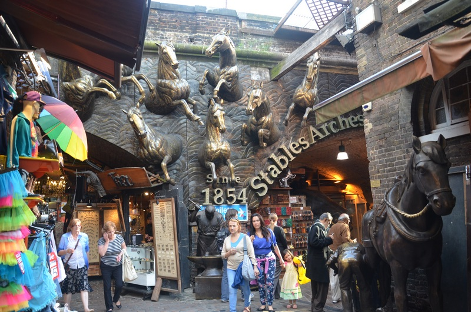
Stables Market
Tržnice Stables Market se nachází v budově bývalých stájí, což vám četné koňské sochy “nenápadně” připomenou na každém rohu. Mezi vším tím hemžením najdete spoustu stánků s exotickým občerstvením snad všech světových kuchyní - a to za překvapivě nízké ceny! A všichni vás samozřejmě lákají, ať jdete ochutnat a slibují ještě slevu - což je na Londýn skutečně nevídané :-)!
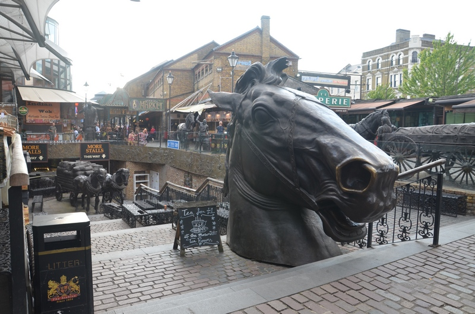
Kůň, kam se podíváš
Naprosto úžasné jsou stánky s retro plechovými tabulemi. U jednoho jsme strávili opravdu hodně času a už jsme byli téměř rozhodnutí, že si nějakou krásku z plakátu musíme rozhodně koupit a pověsit do garáže :D. Nakonec jsme ale dali přednost stánku se suvenýry, kde jsme si koupili báječná (a opět nečekaně levná) londýnská trička.
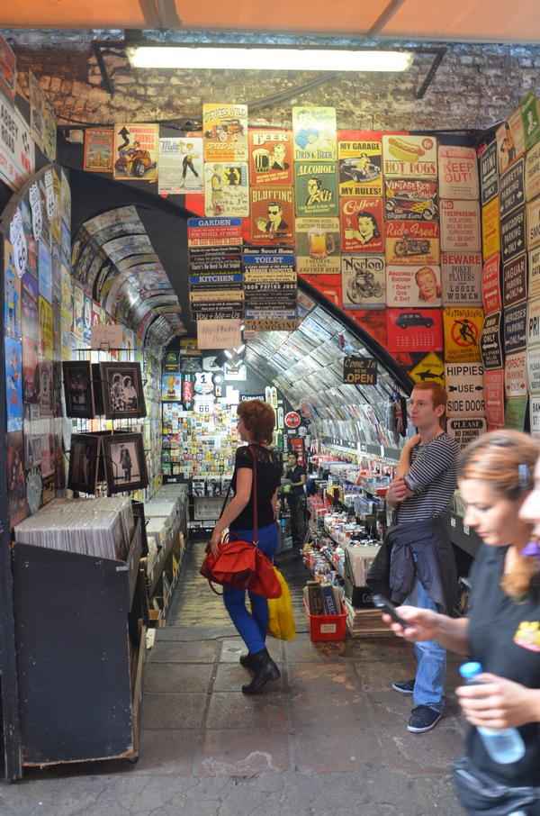
Zamilovaný pohled na fotku Freddieho a Briana O:-)
Další obchod, který nás zaujal, se jmenuje Cyberdog a je to skutečně nevídané místo. Celý obchůdek je vyladěný do robotího stylu - nejlépe to asi ilustruje foto (mimochodem je tam zakázané fotit, takže psst). Do toho hraje psycho muzika, ze které bych se - být zdejší prodavačkou - asi brzy zbláznila :D. A když už jsme u toho, zdejší prodavači jsou taky kapitola sama pro sebe. Svými ulítlými kostýmky už jen dokreslují celkovou atmosféru tohoto místa. Pokud by vás zajímalo, co se v takovém robotím obchůdku prodává, je to převážně spousta originálního oblečení, všelijaké hračky, doplňky a zbytečnosti a v úplně spodním podlaží hračky pro dospělé ;-).
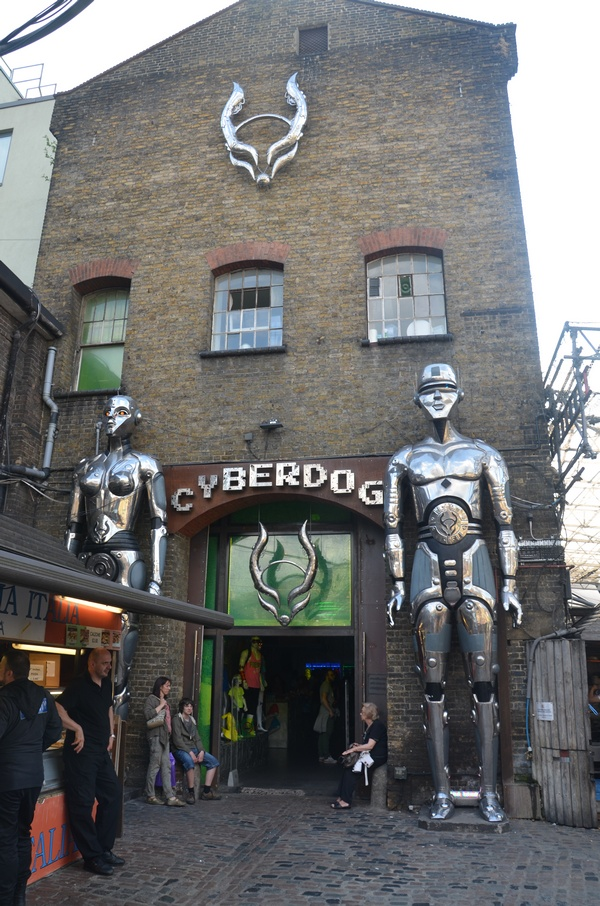
Cyberdog
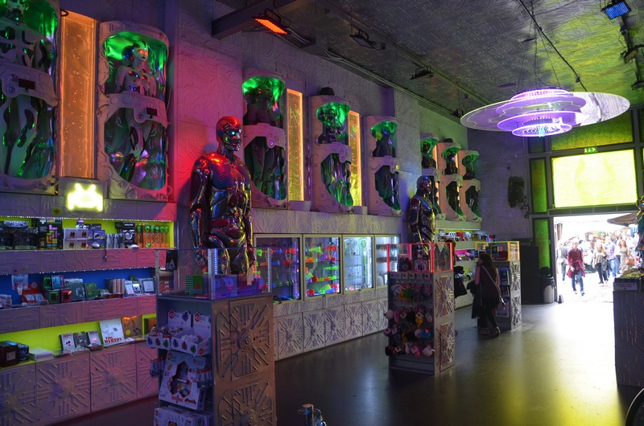
Úlet
Najdete tu také další tematicky zaměřené obchůdky - třeba pro rastamany ;) - a úžasné antikvariáty. Zážitek je to skutečně vyčerpávající, takže se vyplatí zajít si tu na pořádnou poctivou večeři za pár liber. My jsme tentokrát otestovali čínský stánek a báječné sladkokyselé kuře s nudlema. Bylo to vynikající a i má “malá” porce byla ve skutečnosti strašně obrovská.
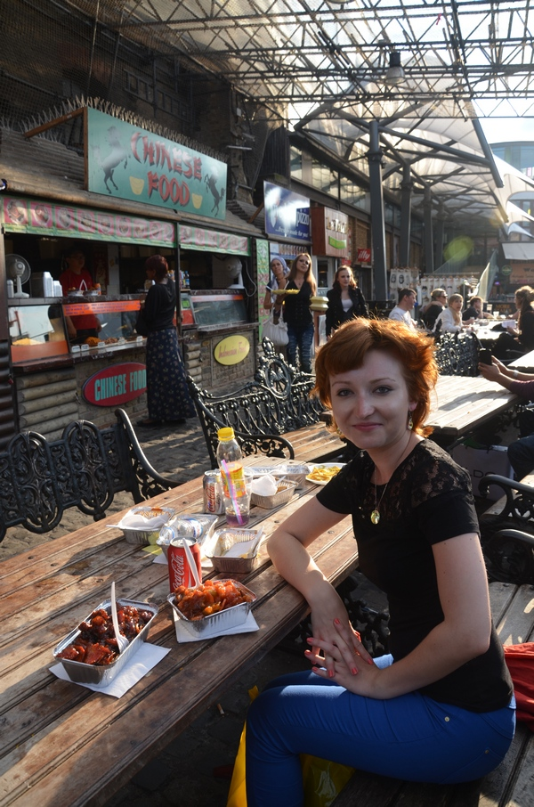
Gastro zážitek z Camdenu
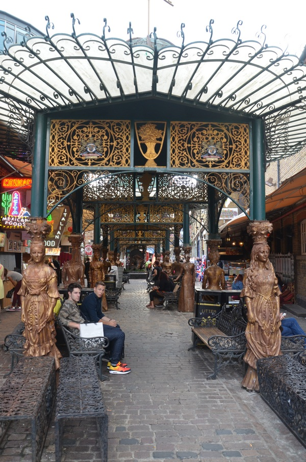
Camden
A po dobré večeři si můžete třeba ještě chvíli posedět u vody ;-)…
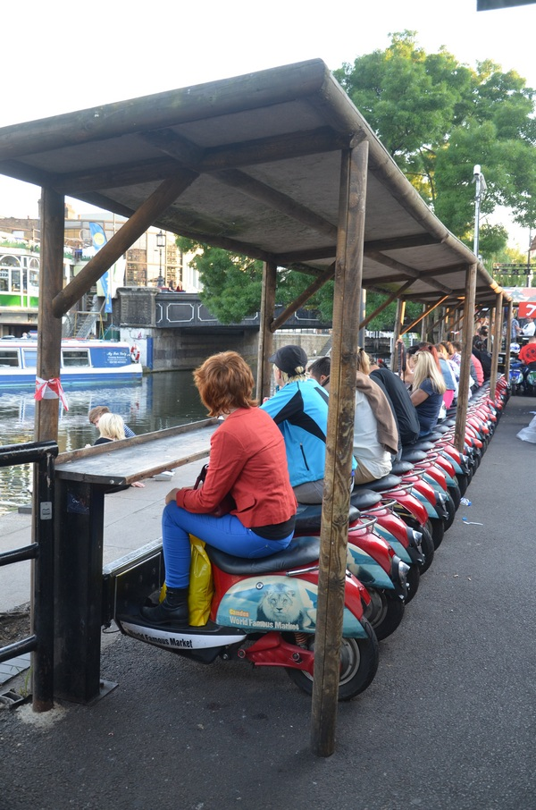
Motorkářský klub
A pak už byl bohužel nejvyšší čas vydat se za posledním cílem naší cesty. Ještě jsme se alespoň prošli směrem k metru po Camden High Street plné stylových punkových obchůdků. Tyhle fotky myslím nejlíp ilustrují, že Camden je prostě jinej svět :D…
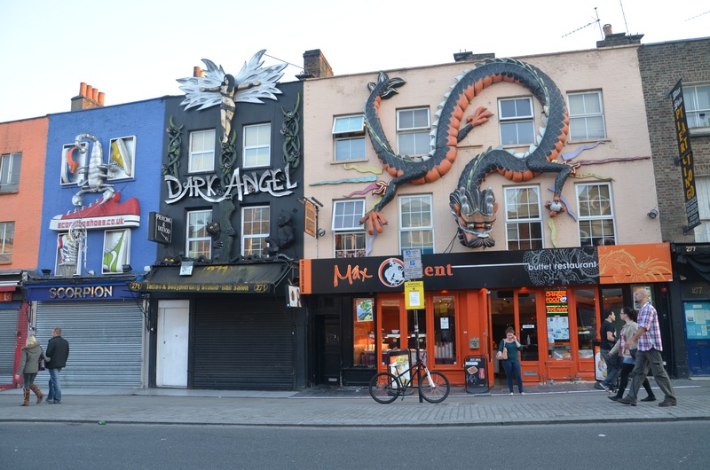
Punk’s not dead…
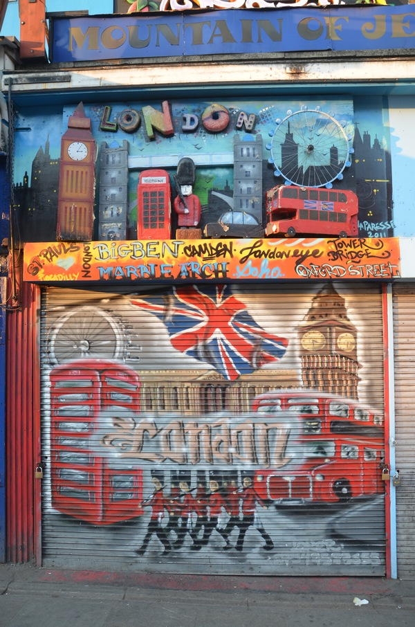
…teda aspoň v Camdenu
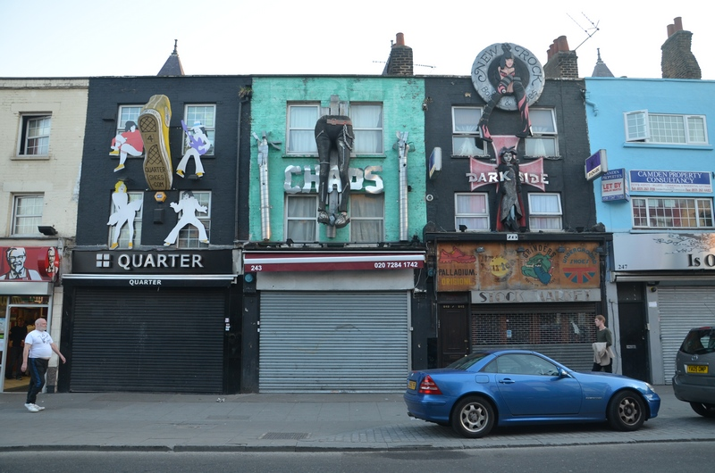
Camden High Street
Míjeli jsme také British Boot Company, kde se vyrábí již od roku 1958 legendární martensky, které dobře posloužily již několika generacím rockerů, punkerů a skinheadů 8-). A mou úplně poslední vzpomínkou na Camden je pouliční zpěvák zpívající Things We Said Today.
A pak už jsme zamířili k naší poslední londýnské zastávce - směrem na Tower Hill. Kvůli Ceremony of Keys je celé nábřeží před Towerem večer uzavřené, takže jsme museli pevnost obejít - není to ale zas tak velká zacházka. Tam jsme opět čekali na setmění, abychom si mohli Tower Bridge vyfotit v záři nočních světel. A stalo se něco naprosto nečekaného - když už jsme se chtěli přemístit na druhou stranu mostu, najednou jsme zjistili, že cesta je zahrazená. Lidé se začali tlačit k zábradlí a to znamenalo jediné - Tower Bridge se bude otevírat kvůli projíždějící lodi :-)!!
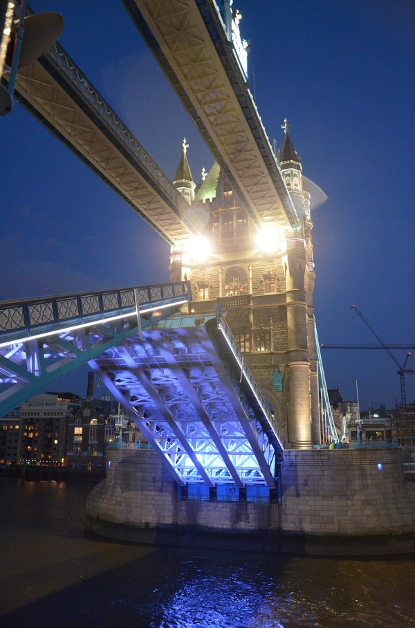
Tower Bridge se otevírá
A tak se nám zcela neplánovaně podařilo stihnout ještě jeden mimořádný zážitek, který dodal celému už tak báječnému dni ještě zlatý hřeb. Byla to asi ta nejlepší možná tečka za celou naší dovolenou. A k této tečce připojuji ještě pár posledních nočních snímků - naše rozloučení s Londýnem.
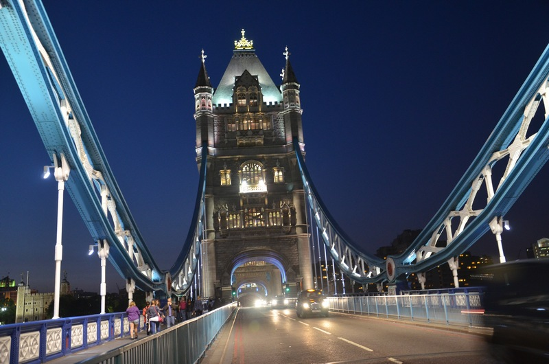
Na mostě
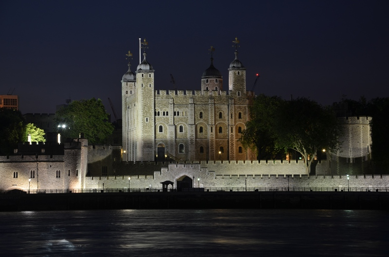
Noční Tower
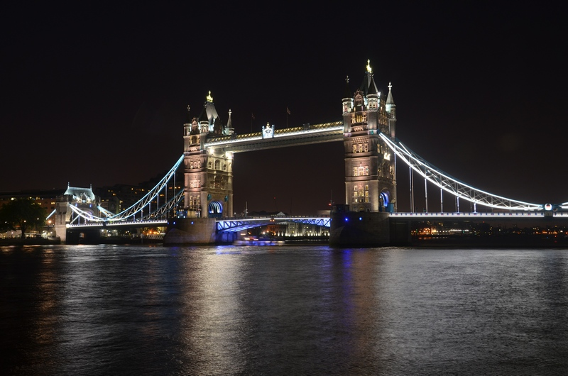
Noční Tower Bridge